- Depuis la version 16 de Stata (printemps 2019) il est possible d’utiliser Python de manière intéractive avec Stata.
- Une librairie Python
SFI(https://www.stata.com/python/api16/Data.html) est mise à disposition pour favoriser cette interactivé. - A l’inverse, une librairie Python officielle devrait être mis à disposition pour utiliser Stata sous Jupyter et Spyder. Actuellement, un noyau Stata [Statakernel] est déjà disponible pour Jupyter et Atom et fonctionne très bien.
- MAJ juin 2022: la librairie
pystataest disponible depuis le printemps 2021 avec la sortie de la version 17 de Stata / pas encore testée
- MAJ juin 2022: la librairie
- En l’état, il me semble que Python peut permettre à Stata de s’étoffer sur deux domaines: le machine learning (
sklearn) et les graphiques data visualization:matplotlib/seaborn, le wrapper de ggplot2plotnineet, pour les graphiques intéractifs et dynamiqueplotly). - l’entrée de l’aide Stata pour utiliser Python:
help python - Eléments de Correspondance Stata - Python pour la manipulation des données (librairie
pandas): https://pandas.pydata.org/docs/getting_started/comparison/comparison_with_stata.html#compare-with-stata
1 Installation de Python et des librairies (Windows)
1.1 Intallation de Python
WARNING Pour utiliser Python, vous devez avoir le même type de built pour les deux applications:
- Stata 64 bits => Python 64 Bits
- Stata 32 bits => Pyhon 32 bits
Python 64
- Installation Standard: https://www.python.org/downloads/windows/
- Anaconda: https://www.anaconda.com/products/individual / Miniconda: https://docs.conda.io/en/latest/miniconda.html
Python 32
- Installation Standard: https://www.python.org/downloads/
- Anaconda: https://www.anaconda.com/products/individual / Miniconda: https://docs.conda.io/en/latest/miniconda.htm
Pour un usage minimal de Python, il n’est pas recommander d’installer Anaconda qui prend beaucoup d’espace. Miniconda devrait suffire.
Installation standard et première utilisation
- https://www.python.org/downloads/windows/
- Bien vérifier que la case [ADD python 3.8 to PATH] est bien cochée
- Ne pas modifier le répertoire d’installation normalement, sous windows:
C:\Users\username\AppData\Local\Programs\Python - Une fois l’installation terminée, ouvrir l’invite de commande [taper
cmddans la boite de recherche du menu windows, ou sous Stata exécuter!oushell] - Dans le prompteur, exécuter
pythonpuis effectuer une operation simple1+1ouprint("Bonjour python")
1.2 Installation des librairies Python
- Peu de librairies sont installées lors de l’installation
- On peut obtenir leur liste avec la commande
help("modules") - Pour vérifier la présence d’une librairie:
help("nom_librairie")
help("statsmodels")
No Python documentation found for 'statsmodels'.
Use help() to get the interactive help utility.
Use help(str) for help on the str class.- Pour installer une librairie, on utilise la commande
pipnormalement installée avec Python (vérifier avechelp("pip")) - Exemple: Installation de
statmodels:- [1] Réouvrir le prompteur windows
- [2] Exécuter
pip install statsmodels(ou! pip install statsmodelssous Stata)
help("statsmodels")
NAME
statsmodels
PACKAGE CONTENTS
_version
api
base (package)
compat (package)
conftest
datasets (package)
discrete (package)
distributions (package)
duration (package)
emplike (package)
formula (package)
gam (package)
genmod (package)
graphics (package)
imputation (package)
interface (package)
iolib (package)
miscmodels (package)
multivariate (package)
nonparametric (package)
regression (package)
resampling (package)
robust (package)
sandbox (package)
src (package)
stats (package)
tests (package)
tools (package)
tsa (package- Comme pour R, l’installation d’une librairie installe également les dépendances. Par exemple la librairie
pandasinstalleranumpy.
Extrait de l’aide numpy après l’installation de pandas
help("numpy")
NAME
numpy
DESCRIPTION
NumPy
=====
Provides
1. An array object of arbitrary homogeneous items
2. Fast mathematical operations over arrays
3. Linear Algebra, Fourier Transforms, Random Number Generation
How to use the documentation
----------------------------
Documentation is available in two forms: docstrings provided
with the code, and a loose standing reference guide, available from
`the NumPy homepage <https://www.scipy.org>`_.
We recommend exploring the docstrings using
`IPython <https://ipython.org>`_, an advanced Python shell with
TAB-completion and introspection capabilities. See below for further
instructions.
The docstring examples assume that `numpy` has been imported as `np`::
>>> import numpy as np
(...)
Mise à jour d’une librairie: pip install nom_librairie --upgrade
1.3 Librairies graphiques
Une liste des principales libraires graphiques de Python:
- matplotlib:
pip install matplotlib[https://matplotlib.org/] - seaborn:
pip install seaborn[https://seaborn.pydata.org/] - plotly:
pip install plotly[https://plotly.com/python/]
Attention: certaines librairies graphiques comme Altair ou Bokeh ne sont utilisables que sous certains environnement comme Jupyter, et ne pourront donc pas être utilisées dans un .do de Stata.
2 Exécuter Python avec Stata
Aide Stata: help python
2.1 Lecture de Python par Stata
Rappel: s’assurer de la concordance des builts (Stata 64 => Python 64 / Stata 32 => Python 32)
- Lorsque Python est installé, on peut vérifier qu’il est bien reconnu avec
python query
python query
Python Settings
set python_exec C:\Users\thevenin_m\AppData\Local\Continuum\anaconda3\python.exe
set python_userpath
Python system information
initialized no
version 3.7.3
architecture 64-bit
library path C:\Users\thevenin_m\AppData\Local\Continuum\anaconda3\python37.dll
- Si on a plusieurs installations de Python (Standard et Conda par exemples), on peut récupérer les chemins d’accès avec
python search:
python search
Python environments found:
C:\Users\thevenin_m\AppData\Local\Continuum\anaconda3\python.exe
C:\Users\thevenin_m\AppData\Local\Programs\Python\Python38\python.exe
- On peut changer de version de python avec
python set exec path [,permanently]
python set exec C:\Users\thevenin_m\AppData\Local\Programs\Python\Python38\python.exe
python query
Python Settings
set python_exec C:\Users\thevenin_m\AppData\Local\Programs\Python\Python38\python.exe
set python_userpath
Python system information
initialized no
version 3.8.3
architecture 64-bit
library path C:\Users\thevenin_m\AppData\Local\Programs\Python\Python38\python38.dll
2.2 Utilisation de python en mode interactif
- Une ligne
python: print("Bonjour Python")
Bonjour Python- Un bloc de ligne
python:
a=2
b=10
a*b
end
>>> a=2
>>> b=10
>>> a*b
20
>>> end
python describe: permet d’afficher les objets python en mémoire
python describe namelist
a:
2
b:
10Python droppermet d’effacer des objets python en mémoire
python drop a
python describe namelist
b:
10
Python clearpermet d’effacer tous les objets python en mémoire
python clear
python describe
2.3 Quelques exemples d’utilisation de Python (graphiques)
2.3.1 Chargement d’une base Stata avec Python
- Une librarie est chargée avec l’instruction
import. Un acronyme lui est associé, icipa(en anglais c’est généralementpd….on s’en passera) pandasa une fonction permettant de lire une base en format .dta [read_dta()]- la fonction
nom_base.head(#)permet d’afficher les premières lignes de la base
sysuse auto, clear
keep price mpg displacement gear_ratio turn foreign
save auto, replace
python:
import pandas as pa
df = pa.read_stata('auto.dta')
df.head()
end
>>> df.head()
price mpg turn displacement gear_ratio foreign
0 4099 22 40 121 3.58 Domestic
1 4749 17 40 258 2.53 Domestic
2 3799 22 35 121 3.08 Domestic
3 4816 20 40 196 2.93 Domestic
4 7827 15 43 350 2.41 Domestic
2.3.2 Exemple 1
- Création d’un graphique de type matrixplot avec la librairie
seabornsur un extrait de la base auto - On va utiliser la fonction
pairplotde la librairieseaborn(acronymesns) seabornne permettant pas au graphique de s’afficher directement aorès son exécution avec Stata, il est enregistré avec la fonctionnom_objet.savefig(path/nom_graph)puis ouvert via le prompteur windows! nom_graph
python:
import seaborn as sns
g = sns.pairplot(df, hue="foreign")
g.savefig("graph1.png")
end
! graph1.pngProgramme en un bloc
sysuse auto, clear
keep price mpg displacement gear_ratio turn foreign
save auto, replace
python:
import pandas as pa
import seaborn as sns
df = pa.read_stata('auto.dta')
g = sns.pairplot(df, hue="foreign")
g.savefig("graph1.png")
end
! graph1.png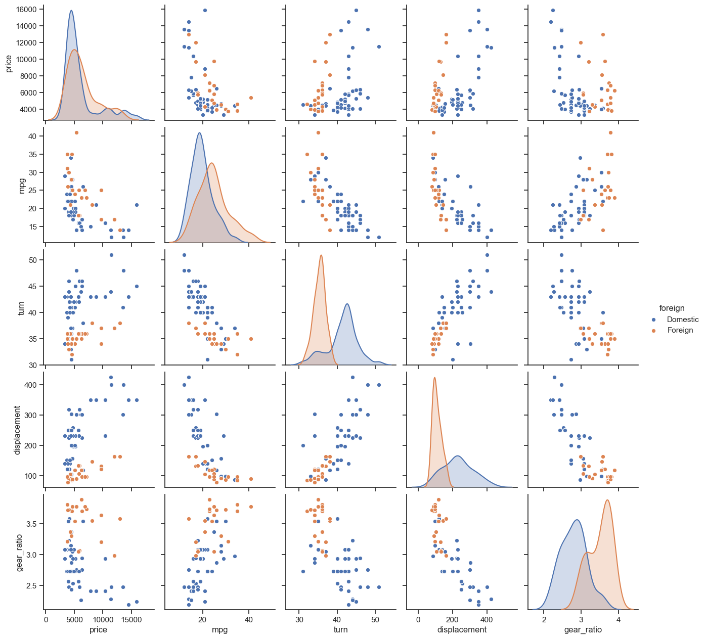
2.3.3 Exemple 2
Création d’un graphique de type violin de la librairie plotpy en passant une macro à un argument de Stata vers Python
MAJ du 04/11/20: on peut se passer de la librairie SFI, la démarche étant un peu lourde, et utiliser directement les macros dans la fonction violin de Plotly. Voir le programme en fin de page. C’est franchement plus simple.
Etape par étape
Définition d’une variable par une macro
local x turnLes codes qui suivent sont appelés en mode python
python:
<py1>: chargement des librairies>
<py2>: récupération de la macro et création d'une dataframe
<py3>: création du graphique et affichage
end[Py1] Chargement des librairies
import pandas as pa
import plotly.graph_objects as go
from sfi import *- Une des particularités de python (et ce n’est pas un point fort) est qu’il est (parfois) nécessaire de charger explicitement des fonctions d’une librairie: ici la librairie est
plotlydans laquelle on veut utiliser la fonctiongraph_objects. On importe non pas la librairie, mais une fonctionnalité de celle-ci:import plotly.graph_objects as go - On importe également, dans son ensemble, la librairie python
SFIde Stata:from sfi import *(* car on importe tous les modules)
[Py2] Récupération de la macro et création de la dataframe
varname = Macro.getLocal("x")
v = Data.get(var = varlist)
df = pd.DataFrame(v,columns = ['var'])varname = Macro.getLocal("x")permet a python de récupéré le contenu de la macro x
>>> varname = Macro.getLocal("x")
>>> varname
'turn'v = Data.get(var = varname)permet de récupérer, sous forme d’un vecteur, les observations de la variable associée à la macro (ici turn)
>>> v = Data.get(var = varname)
>>> v
[40, 40, 40, 43, 43, 42, 43, 42, 44, 43, 45, 34, 43, 31, 41, 40, 43, 35, 46, 46, 46, 33, 43, 5
> 1, 48, 41, 39, 48, 44, 41, 45, 43, 43, 42, 42, 42, 43, 40, 43, 37, 37, 36, 44, 42, 42, 45, 4
> 0, 41, 37, 36, 34, 35, 32, 34, 38, 36, 36, 34, 33, 34, 36, 36, 35, 36, 36, 35, 35, 36, 37]df = pd.DataFrame(v,columns = ['var'])transforme le vecteur en dataframe. J’ai choisi le nom var pour la variable, je n’ai pas (encore) trouvé le moyen d’utiliser le contenu de la macro pour la variable sélectionné. Mais c’est sans importance pour ce graphique, on pourra récupérer le nom de la variable pour le titre.
>>> df = pa.DataFrame(v,columns = ['var'])
>>> df.head()
var
0 40
1 40
2 40
3 43
4 43[Py3] Création de l’objet graphique
fig = go.Figure(data=go.Violin(y=df['var'], box_visible=True, line_color='black', meanline_visible=True,
fillcolor='rgb(248,118,109)', opacity=0.5, x0='var'))
fig.update_layout( title=" violin plot pour la variable `x'", font=dict( family="Arial", size=18, color='rgb(97,156,255)'))
python: fig.show())- La variable est appelée par
y=df['var'], le reste constitue des options fig.update_layoutpermet d’ajouter des éléments de type texte. On peut récupérer directement le nom de la variable dans le titre avec la macro x: title=“violin plot pour la variable `x’”. On pourrait faire de même avec les titres des axes.
fig.show()permet d’afficher le graphique sous format html (format des graphique deplotly). On peut se déplacer sur le graphique pour lire les valeurs (moyenne, médiane, valeur de y et la valeur de la densité estimée. Le graphique peut être enregistré en format statique (.png) directement via le menu de la fenêtre.
Programme en un bloc
local x turn
python clear
python:
import plotly.graph_objects as go
import pandas as pa
from sfi import *
varname = Macro.getLocal("x")
v = Data.get(var = varname)
df = pa.DataFrame(v,columns = ['var'])
df.head()
fig = go.Figure(data=go.Violin(y=df['var'], box_visible=True, line_color='black', meanline_visible=True,
fillcolor='rgb(248,118,109)', opacity=0.5, x0='var'))
fig.update_layout( title=" Violin plot pour la variable `x'", font=dict( family="Arial", size=18, color='rgb(97,156,255)'))
python: fig.show()
endDans une routine type ado
Je rencontre une difficulté pour afficher le graphique avec un programme en deux blocs, un bloc Stata puis un bloc python. Une histoire de fonction à appeler dans le bloc Stata que je n’arrive pas à définir
programme define violin
syntax varlist [,options]
<programme Stata>
end
python:
<code python>
endEn un bloc, en appelant Python à chaque ligne, ce qui n’est franchement pas génial, la routine suivante fonctionne
***Programme de la commande violon***
*partie Stata
capt program drop violin
program define violin
syntax varlist, [title(string)] [ytitle(string)] [xtitle(string)]
*partie python
python: import plotly.graph_objects as go
python: import pandas as pd
python: from sfi import *
python: varlist = Macro.getLocal("varlist")
python: v = Data.get(var = varlist)
python: df = pd.DataFrame(v,columns = ['var'])
python: fig = go.Figure(data=go.Violin(y=df['var'], box_visible=True, line_color='black', meanline_visible=True, fillcolor='lightseagreen', opacity=0.5, x0='var'))
python: fig.update_layout( title="`title'", xaxis_title="`xtitle'", yaxis_title="`ytitle'", font=dict( family="Courier New, monospace", size=18, color="#7f7f7f"))
python: fig.show()
end
***Execution de la commande***
* sysuse auto, clear
* violin mpg
* violin price, title("GRAPHIQUE TYPE VIOLON") xtitle("PRICE")
MAJ du 04 Novembre 2020
- On va utiliser directement la macro qui enregistre le nom de la variable, ici turn, dans la fonction
violin - On utilise la fonction
read_statade la librairiepandaspour charger la base Stata - On voit que la macro
xest directement utilisable dans la fonctionviolin:
go.Violin(y=df['`x''],....)- Bizarrement dans le programme précédent, j’avais utilisé directement la macro `title’ dans le programme Python, sans tester la même chose pour la variable
sysuse auto, clear
local x turn
python:
import plotly.graph_objects as go
import pandas as pa
df = pa.read_stata('auto.dta')
fig = go.Figure(data=go.Violin(y=df['`x''],
box_visible=True,
line_color='black', meanline_visible=True,
fillcolor='rgb(248,118,109)',
opacity=0.5, x0='var'))
fig.update_layout( title=" Violin plot pour la variable `x'",
font=dict( family="Arial",
size=18, color='rgb(97,156,255)'))
fig.show()
end3 Visualisation des données (plotnine…)
- Principe: reprendre des visualisations de la partie visualisation des données avec Stata avec des codes python exécutables dans un .do.
- Tous les chemins mènent à ggplot: J’utiliserai principalement le wrapper de ggplot2, plotnine (Hassan Kibirige).
- Par rapport à seaborn, plotnine affiche directement les graphiques, et je n’ai pas rencontré de problème avec les axes lorsque les coordonnées sont modifiées (obligé de fermer et réouvrir le .do avec seaborn). Il faut néanmoins penser à fermer la fenêtre avant d’exécuter un nouveau graphique pour qu’il s’affiche.
- On peut se reporter facilement aux ressources sur ggplot2 pour construire un graphique avec plotnine, la syntaxe étant quasiment identique.
- Support plotnine (fonctions peu détaillées): https://plotnine.readthedocs.io/en/stable/index.html
- Traduction des chapitres de l’ouvrage R for data science (H.Wickham,G.Grolemund) dédiés à ggplot en plotnine: https://datascienceworkshops.com/blog/plotnine-grammar-of-graphics-for-python/
- Quelques ressources ggplot2:
- https://larmarange.github.io/seminaire-INED-18juin2019/diaporama.html#/ et https://larmarange.github.io/analyse-R/ (plusieurs chapitres dédiés aux graphiques)
- http://www.sthda.com/english/wiki/be-awesome-in-ggplot2-a-practical-guide-to-be-highly-effective-r-software-and-data-visualization (en)
- Beaucoup d’entraides via les forums type stackexchange
Différence plotnine / ggplot2
- La couverture des fonctionnalités de ggplot2 avec plotnine n’est pas totale, elle serait de 95% (J.Janssens).
- On doit utiliser la parenthèse comme délimiteur si le graphique est exécuté sur plusieurs lignes
- Les arguments de certaines options ne sont pas sépararés par
.mais par_[par exempleaxis_text_xau lieu deaxis.text.x]
Macro Stata
Les macro Stata sont pleinement reconnues par plotnine….et ça c’est bien !
Exemple
* Prévoir chargement des librairies python
sysuse auto, clear
local x price
local y mpg
save auto, replace
python:
df=pa.read_stata('D:/stata_temp/auto.dta')
( ggplot(df, aes(x='`x'', y='`y'')) + geom_point() )
endInstallation des librairies
Dans l’invite de commande windows
pip install plotnine
pip install matplotlib
pip install seabornUn premier exemple
Exécution dans un .do et affichage du graphique
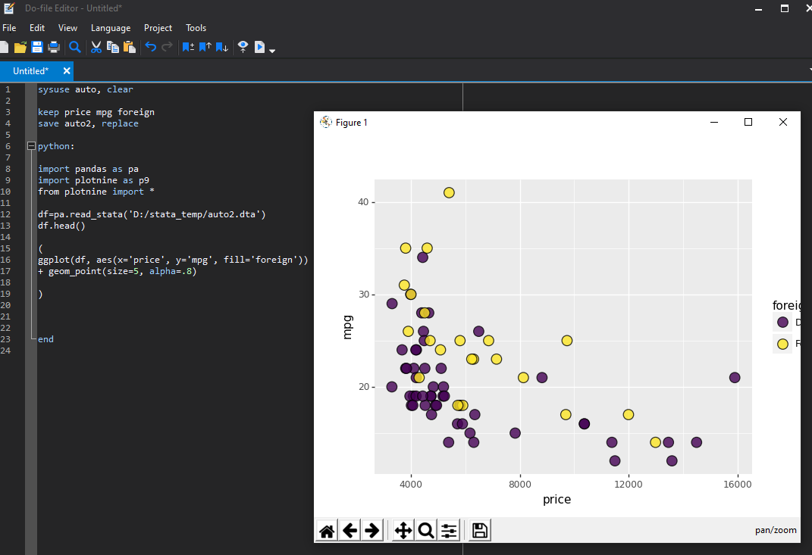
- Les coordonnées du graphique sont renseignées dans
aes(....). Il s’agit du mapping du graphique fill='foreign'permet d’avoir des couleurs- Le nuage de point est exécuté avec
geom_pointavec en options:- La taille des bulles:
size=5 - Une réduction de l’opacité de la couleur des bulles:
alpha=.8
- La taille des bulles:
sysuse auto, clear
keep price mpg foreign
save auto2, replace
python:
# penser à charger les librairies à chaque session
import pandas as pa
import plotnine as p9
from plotnine import *
# Ouverture de la base stata avec pandas
df=pa.read_stata('D:/stata_temp/auto2.dta')
df.head()
#graphique ggplot avec plotnine
(
ggplot(df, aes(x='price', y='mpg', fill='foreign'))
+ geom_point(size=5, alpha=.8)
)
end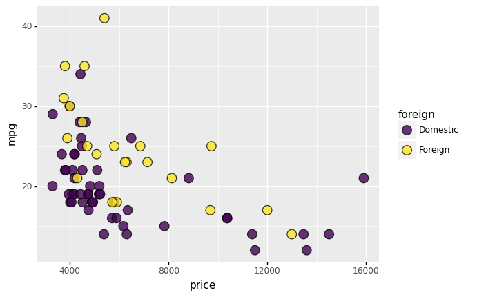
3.1 Histogramme et Densité
- L’histogramme est exécuté avec
geom_histogram() - La largeur des barres a été fixée à 10 par l’option
binwidth - La couleur des barres est entrée en hexadecimal (pour convertir du rgb en hex:http://www.proftnj.com/RGB3.htm) avec l’option
fill - La couleur du contour des barres est entré avec l’option
color
import delimited "https://raw.githubusercontent.com/holtzy/data_to_viz/master/Example_dataset/1_OneNum.csv", clear
keep if price<=300
save price, replace
python:
df=pa.read_stata('D:/stata_temp/price.dta')
df.head()
(
ggplot(df, aes(x='price'))
+ geom_histogram(binwidth=10, alpha=0.8, fill='#41B6C4', colour='black')
)
end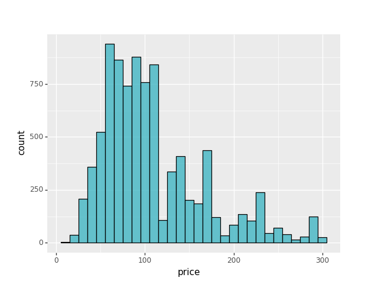
- Pour une densité, on utilise
geom_density()
python:
(
ggplot(df, aes(x='price'))
+ geom_density(alpha=0.8, fill='#41B6C4', colour='black')
)
end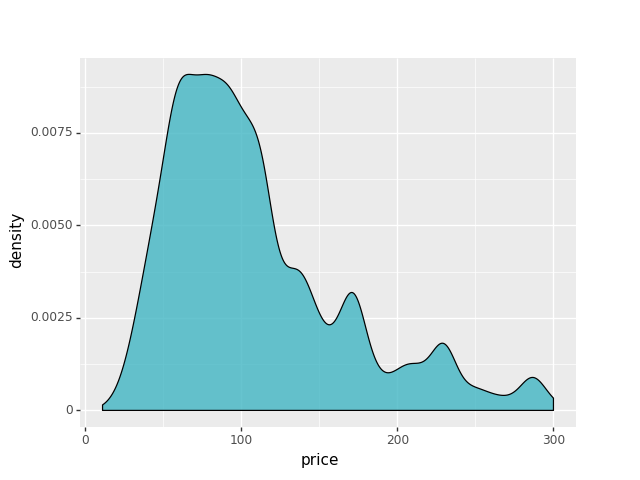
- On peut ajouter sous forme de petites barres la distribution de la variable avec
geom_rug()
python:
(
ggplot(df, aes(x='price'))
+ geom_density(alpha=0.8, fill='#41B6C4', colour='black')
+ geom_rug()
)
end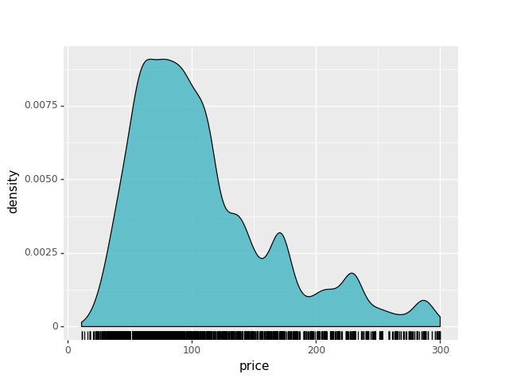
3.2 Box plot et violin
Préparation des données
clear
set obs 1000
gen A = rnormal(10,5)
gen B = rnormal(13,1) in 1/500
replace B = rnormal(18,1) in 501/1000
gen C = rnormal(25,5) in 1/20
gen D = rnormal(12,2) in 1/10
stack A B C D, into(y)
gen x="A" if _stack==1
replace x="B" if _stack==2
replace x="C" if _stack==3
replace x="D" if _stack==4
drop _stack
drop if y==.
save "box", replaceBOX PLOT
- On trace une box plot avec
geom_boxplo()t - Les notches permettent de mieux faire apparaitre la médiane
- On retire la légende, les valeurs des catégories étant déjà reportées sur x, avec
theme(legend_position='none').theme(....)permet d’entrer toutes les options générales du graphique
python:
df=pa.read_stata('D:/stata_temp/box.dta')
df.head()
(
ggplot(df, aes(x='factor(x)', y='y', fill='factor(x)'))
+ geom_boxplot(notch=True)
+ theme(legend_position='none')
)
end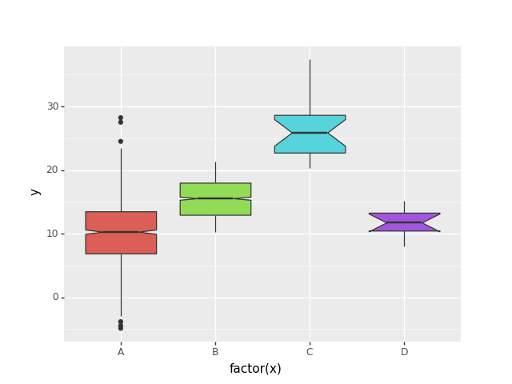
Si l’on souhaite contrôler le nombre d’observations par catégorie on peut tracer des jitters avec geom_jitter()
python:
(
ggplot(df, aes(x='factor(x)', y='y', fill='factor(x)'))
+ geom_jitter(size=2, color='white')
+ theme(legend_position='none')
)
end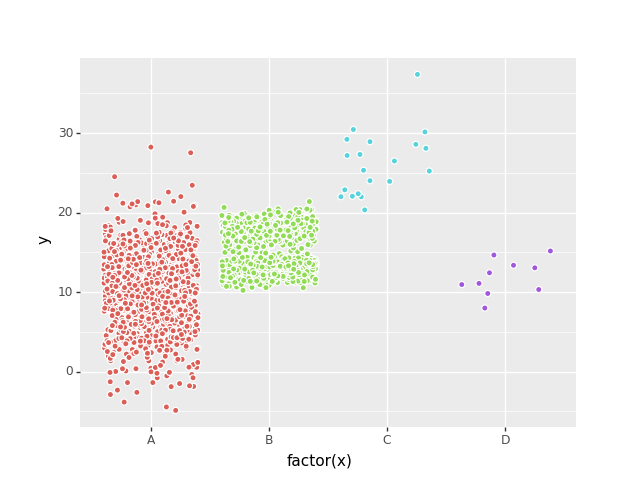
Ces jitters peuvent être facilement ajouter aux box en arrière plan.
python:
g1= aes(x='factor(x)', y='y')
g2= aes(x='factor(x)', y='y', fill='factor(x)')
(
ggplot(df, aes('factor(x)', y='y'))
+ geom_jitter(g1, size=1, width=.2, alpha=1, fill='black' , color='white')
+ geom_boxplot(g2, alpha=.7, notch=True)
+ theme(legend_position='none')
)
end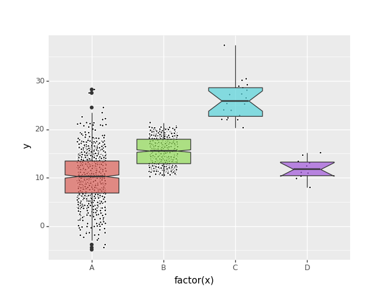
BEAN & VIOLIN
- Les graphiques de type beans réprésentent la même densité en mirroir. Ils sont néanmoins exécutés avec
geom_violin() - On ajoute la valeur des quartiles avec
draw_quantiles=(.25,.5,.75) - Pour obtenir des violins, on doit superposer une box plot, ce qu’on fait dans le second graphique.
python:
(
ggplot(df, aes(x='factor(x)', y='y', fill='factor(x)'))
+ geom_violin(g2, alpha=.7, draw_quantiles=(.25,.5,.75))
+ theme(legend_position='none')
)
end
Le graphique violin avec des jitters en arrière plan
python:
v= aes(x='factor(x)', y='y', fill='factor(x)')
(
ggplot(df, aes('factor(x)', y='y'))
+ geom_jitter(size=1, width=.2, alpha=1, fill='black' , color='white')
+ geom_violin(v, alpha=.7)
+ geom_boxplot(alpha=1, width=.1)
+ theme(legend_position='none')
)
end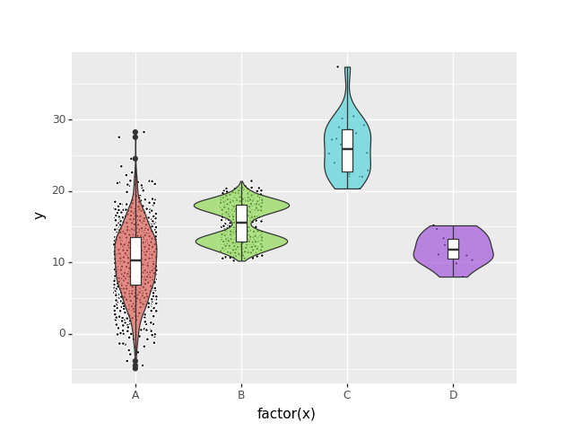
Découverte un peu par hasard, et peut-être que la meilleure visualisation est donnée ici par la géométrie geom_sina qui contrôle les coordonnées des jitters sur l’axe discret par la valeur de la densité.
L’option stroke permet de changer l’épaisseur du contour des bulles
python:
(
ggplot(df, aes(x='factor(x)', y='y', fill='factor(x)'))
+ geom_sina(size=1, color='black', stroke=.1)
+ geom_boxplot(alpha=.5, fill='white', width=.1)
+ theme(legend_position='none')
)
end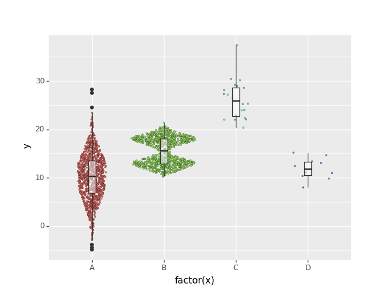
3.3 Application sur les probabilités assignées
- Le graphique avec les 17 densités est peu lisible
- Je me suis calé sur l’option par défaut de Stata avec l’option
bw='silverman', qui me semble bien plus appropriée pour faire apparaître la forte concentration des réponse autoure de 50% pour “about even”
import pandas as pa
df=pa.read_stata('D:/Marc/SMS/FORMATIONS/2020/graph ur9/formation/probability_long.dta')
df.head()
(
ggplot(df, aes(x='p', color="proba", fill='proba'))
+ geom_density(alpha=0.7, color='black', bw='silverman')
)
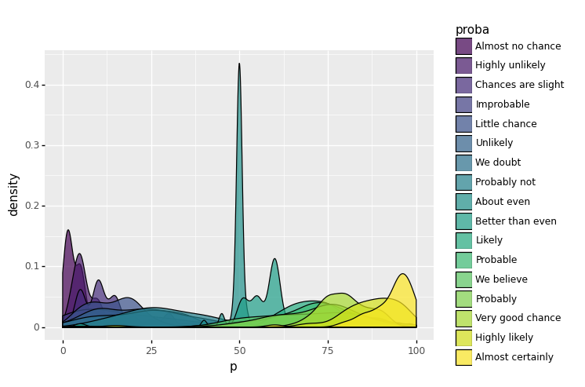
Facettes
On peut représenter rapidement les différentes densités sous forme de facettes (graphique combiné de chaque courbe)
- Facette:
facet_wrap('proba') - J’ai réduit la taille des titres des sous graphiques avec
theme(strip_text = element_text(size=5))
(
ggplot(df, aes(x='p', color="proba", fill='proba'))
+ geom_density(alpha=0.5, bw='silverman')
+ facet_wrap('proba')
+ theme(strip_text = element_text(size=5))
+ theme(legend_position='none')
)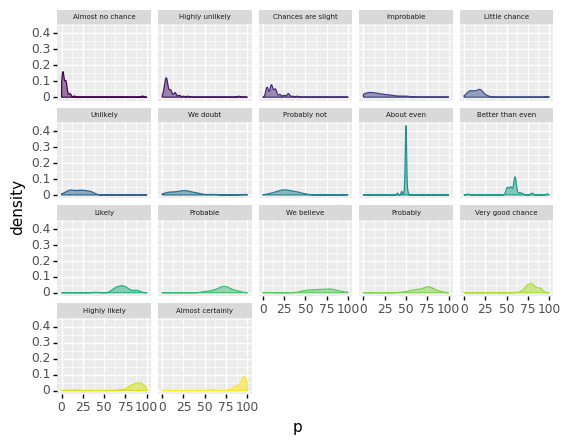
Même type de graphique avec des histogrammes
(
ggplot(df, aes(x='p', color="proba", fill='proba'))
+ geom_histogram(alpha=0.5, binwidth=5)
+ facet_wrap('proba')
+ theme(strip_text = element_text(size=5))
+ theme(legend_position='none')
)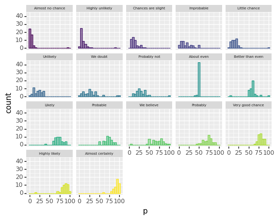
Boxplot
Des box-plot me semblent assez appropriées, avec ici des effectifs identiques pour tous les groupes.
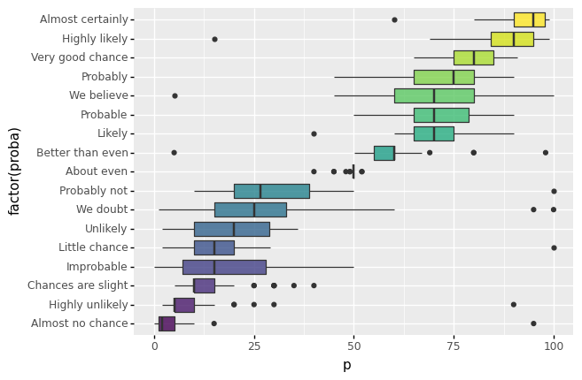
Ridge
La librairie plotnine n’a pas une fonction comme ggridge pour tracer des courbes de ridge.
On peut utiliser la librarie joypy, dont la syntaxe est simple, mais provoque (chez moi) un crash de Stata (ok avec le notebook Jupyter)
3.4 Nuages et densités 2D
- Pour les nuages de points on utilise
geom_point() - Pour les densités (courbes de niveau) et les histogrammes sur deux axes de coordonnées on utilise
geom_density_2detgeom_bin2d - On tracera également le graphique combiné avec les distributions marginales à l’aide de la fonction
jointplotde la librairiesseaborn
Préparation de données
use "D:/Marc/SMS/FORMATIONS/2020/graph ur9/formation/twonums.dta", clear
keep if surface<=3000
keep if prix<=500000
save "prix_surface", replace
python:
import pandas as pa
import plotnine as p9
from plotnine import *
import numpy as np
df=pa.read_stata('D:/stata_temp/prix_surface.dta')
df.head()
endNuages de points
python:
(
ggplot(df, aes(x='surface', y='prix'))
+ geom_point(color='#41B6C4')
)
end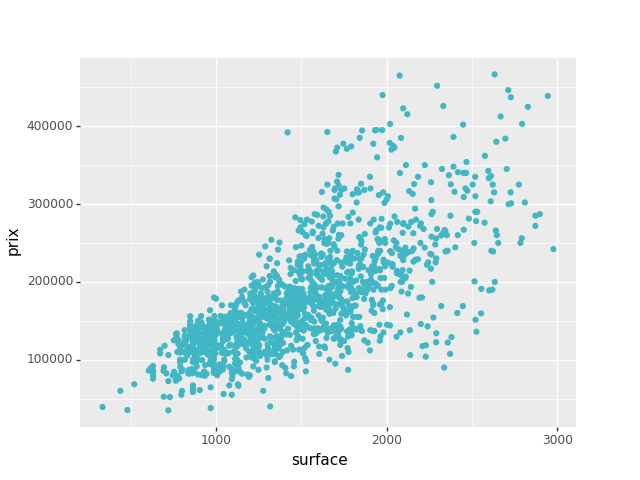
On réduit la taille des bulles avec l’option “size”
python:
(
ggplot(df, aes(x='surface', y='prix'))
+ geom_point(color='#41B6C4', size=.1)
)
end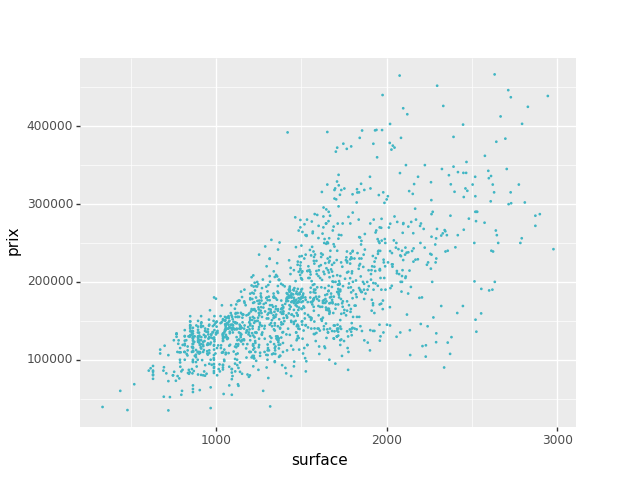
Courbes de niveau
L’option level donne comme avec Stata le nombre de courbes de niveau qui sont estimées
python:
(
ggplot(df, aes(x='surface', y='prix'))
+ geom_density_2d(color='#41B6C4', levels=20, size=.5)
)
end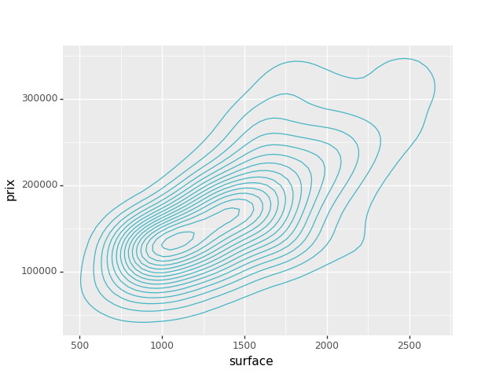
On peut empiler le nuage de points les courbes (+ petites barres sur les axes pour les distributions marginales)
python:
(
ggplot(df, aes(x='surface', y='prix'))
+ geom_point(size=.1, color='#41B6C4')
+ geom_density_2d(levels=20, size=.5)
+ geom_rug(color='#41B6C4')
)
end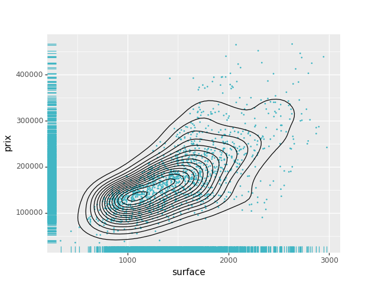
Pour reporter des couleurs pour chaque ligne de niveau ou remplir d’une couleur différente la surface entre chaque courbe, les couleurs sont appliquées sur l’argument level (nombre de courbes estimées) '..level..'
python:
(
ggplot(aes(x='surface', y='prix', color='..level..'))
+ geom_density_2d(levels=20, size=.5)
+ theme(legend_position='none')
)
end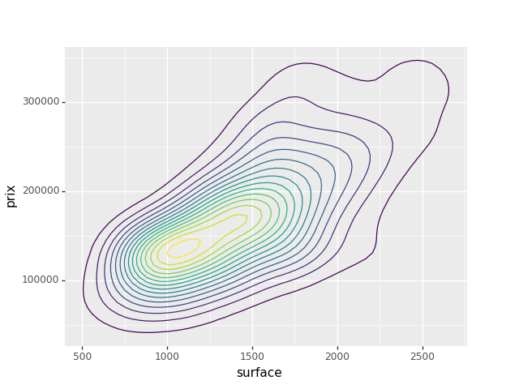
Pour remplir les surface entre les courbes, on doit ajouter l’option stat_density_2d, ajouter un mapping aes() avec l’argument fill='..level..', ainsi que la geométrie polygon (pas très intuitif)
python:
(
ggplot(aes(x='surface', y='prix'))
+ stat_density_2d(aes(fill='..level..'), geom = "polygon", contour=True, levels=20)
+ geom_density_2d(levels=20, size=.5, color='black')
+ theme(legend_position='none')
)
end
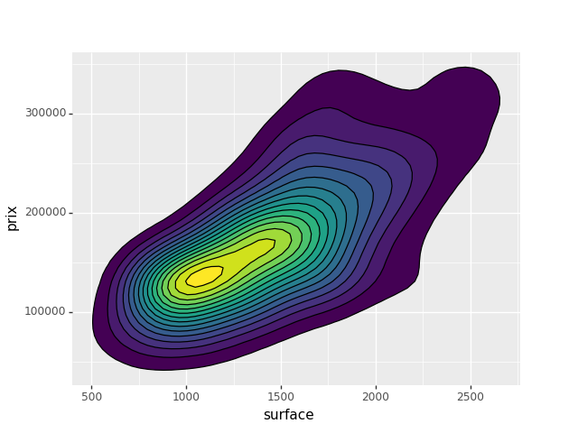
Heatmap (histogramme 2d)
Il n’y a pas (encore) de version sous forme d’hexagone avec plotnine
python:
(
ggplot(aes(x='surface', y='prix'))
+ geom_bin2d(bins = 50, color='white', size=.2)
)
end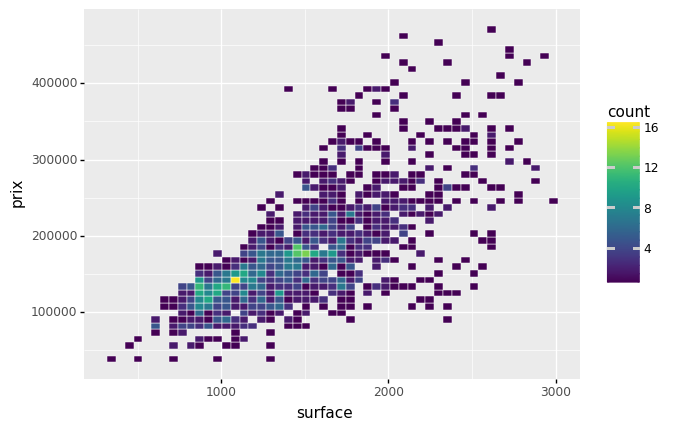
Combinaison avec les distributions marginales (seaborn)
- La fonction
jointplotsemble ici la plus adaptée, la syntaxe très simple. - L’option
kinddéfinit le type de représentation: nuage/histogramme, heatmap/histogramme, courbe de niveau/densités [par défaut nuage + histogramme] - les graphique de seaborn sont plus fastidieux pour être afficher avec Stata, il faut sauf exception les enregistrer (sauf si la fonction
plt.show()fonctionne) avec la fonctionsavefig()et les ouvrir avec une shell (! nom_graph.png)
import seaborn as sns
import matplotlib as pltpython:
g = sns.jointplot(data=df, y="prix", x="surface", color='#41B6C4')
g.savefig("graph1.png")
end
!graph1.png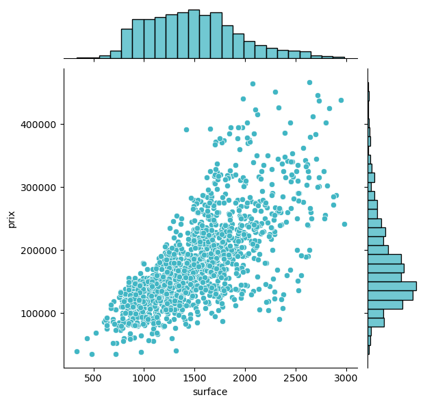
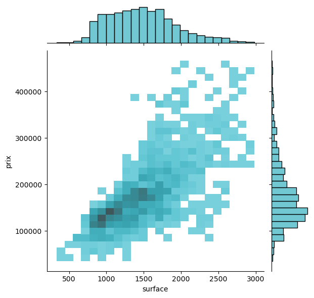
python:
g = sns.jointplot(data=df, y="prix", x="surface", color='#41B6C4', kind='hist')
g.savefig("graph1.png")
end
!graph1.pngOn peut obtenir une heatmap de type héxagones avec l’option kind='hex'
python:
g = sns.jointplot(data=df, y="prix", x="surface", color='#41B6C4', kind='hex')
g.savefig("graph1.png")
end
!graph1.png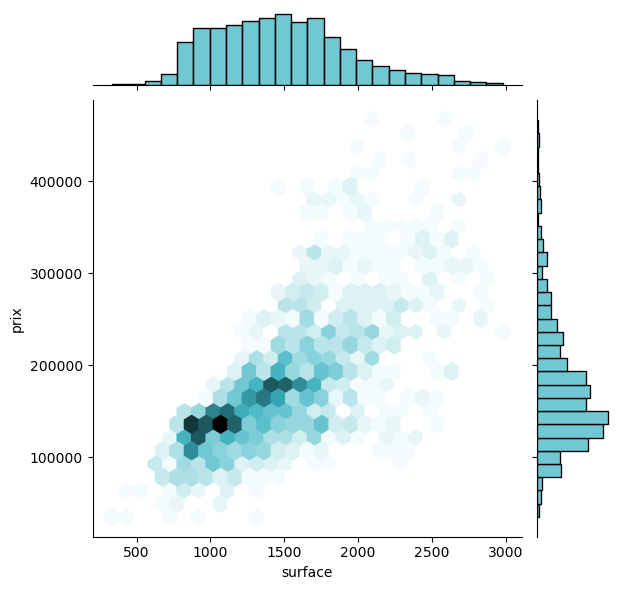
python:
g = sns.jointplot(data=df, y="prix", x="surface", color='#41B6C4', kind='kde')
g.savefig("graph1.png")
end
!graph1.png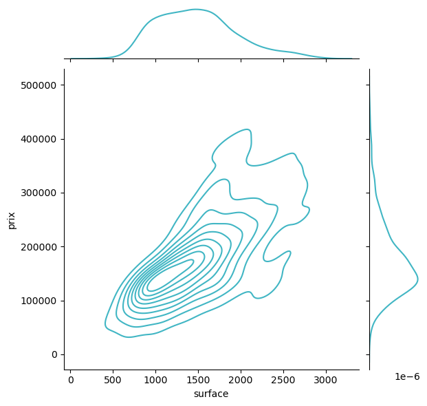
L’option fill='code_couleur' permet de remplir l’aire entre les courbes de niveau ainsi que les densités marginales
python:
g = sns.jointplot(data=df, y="prix", x="surface", color='#41B6C4', kind='kde', fill='#41B6C4')
g.savefig("graph1.png")
end
!graph1.png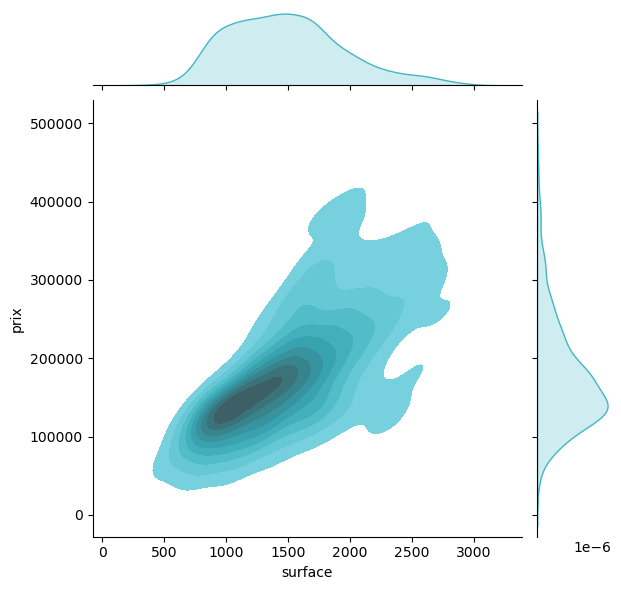
3.5 Courbes
- Applications sur les prénoms (effet spaghetti)
- Pour tracer des courbes on utilise
geom_line() - Si on veut remplir la surface sous la courbe par une couleur on utilise
geom_area(). C’est le même principe qu’avec les graphiques Stata.
Préparation des données (Stata)
clear
import delimited using "https://raw.githubusercontent.com/mthevenin/stata_fr/master/babynames.csv"
gen mary="Mary" if name=="Mary"
save babyname, replaceLe graphique est peu lisible si les courbes sont empilées
python:
(
ggplot(df, aes(x='year', y='n', group='name', color='name'))
+ geom_line()
)
end
Comme pour les densités, on peut représenter les courbes sous formes de facettes. J’ai ajouter quelques options pour contrôler la taille des textes et ajouter un titre au graphique. Une version avec le remplissage de l’aire sous les courbes est également donnée: on replace color='name' par 'fill='name' et geom_line() par geom_area.
python:
(
ggplot(df, aes(x='year', y='n', group='name', color='name'))
+ geom_line()
+ facet_wrap('name')
+ theme(strip_text = element_text(size=5),
axis_text_x = element_text(size = 5),
axis_text_y = element_text(size = 6),
legend_position='none')
+ labs(title="Popularity of american names")
)
end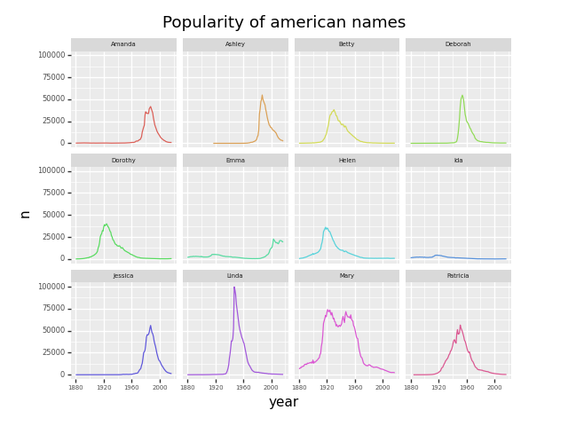
python:
(
ggplot(df, aes(x='year', y='n', group='name', fill='name'))
+ geom_line()
+ facet_wrap('name')
+ theme(strip_text = element_text(size=5),
axis_text_x = element_text(size = 5),
axis_text_y = element_text(size = 6),
legend_position='none')
+ labs(title="Popularity of american names")
)
end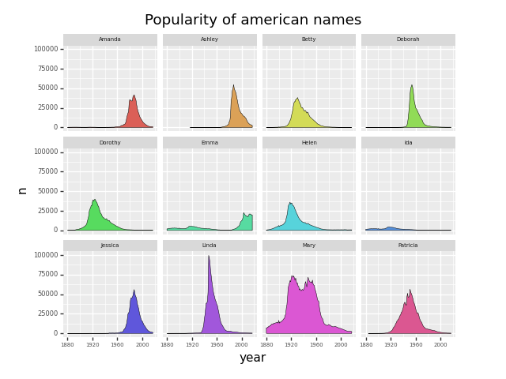
L’autre solution est de mettre un nom en highlight. On superpose la courbe pour Mary (verte et plus épaisse) aux autres (grises, plus fines).
La version pour tous les prénoms sous forme de facettes, particulièrement lourde à programmer avec Stata n’est pas tracée, je n’ai pas trouvé de solution simple avec plotnine (le graphique d’origine de Yan Holtz, sous R, mobilise des fonctions dplyrdans les arguments ggplot).
python:
mary = df.query("name == 'Mary'")
(
ggplot(df, aes(x='year', y='n', group='name'))
+ geom_line(color='grey')
+ geom_line(mary, aes(x='year', y='n'), color="#2DB27D", size=1.5)
+ labs(title="Popularity of Mary", color="#2DB27D")
+ theme(
plot_title = element_text(colour = "#2DB27D")
)
)
end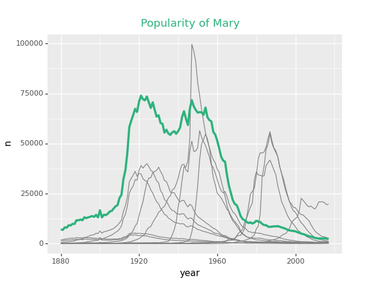
3.6 Barres et lollipop
Cela va se compliquer un peu (ordre des barres, légende pour les comparaisons)
- On exécute des graphiques de types barres avec
geom_bar. - Pour un graphique de type lollipop, on utilise
geom_segment()etgeom_point() - Pour ordonner les barres, on utilisera la fonction
reorder(). Cela alourdit la syntaxe du graphique, mais évite d’utiliser des fonctionspandaselles mêmes assez lourdes. - Comme il s’agit d’utiliser Python avec Stata, les données seront mises en forme avec la commande
collapse.
Barres
*Préparation des données (Stata)
sysuse nlsw88.dta, clear
keep wage occupation union
drop if inlist(occupation,9,10,12, .)
save nlsw88.dta, replace
preserve
collapse wage, by(occ)
drop if occ==.
drop if wage==.
save wage1, replace
restore- On réutilisera
geom_bar()pour les variables catégorielles, mais ici comme on a une observation par branche professionnelle, aucun calcul n’est nécessaire pour générer le graphique. On indique que les valeurs sont prises telles quelles avec l’optionstat=identity. - Comme les graphiques de type barres sont plus lisibles horizontalement, on inverse les coordonnées avec
coord_flip()
(
ggplot()
+ geom_bar(df,aes(x='occupation', y='wage') , stat='identity', color='black', fill='#225EA8')
+ ylab("Wage (mean)")
+ xlab("Occupation")
+ coord_flip()
)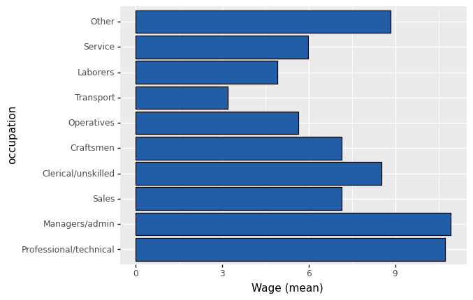
Pour trier les branches selon la valeur du salaire moyen horaire, on utilise dans le mapping la fonction reorder(variable,valeur). L’argument valeur est donné par la variable wage
python:
(
ggplot()
+ geom_bar(df,aes(x='reorder(occupation,wage)', y='wage') , stat='identity', color='black', fill='#225EA8')
+ ylab("Wage (mean)")
+ xlab("Occupation")
+ coord_flip()
)
end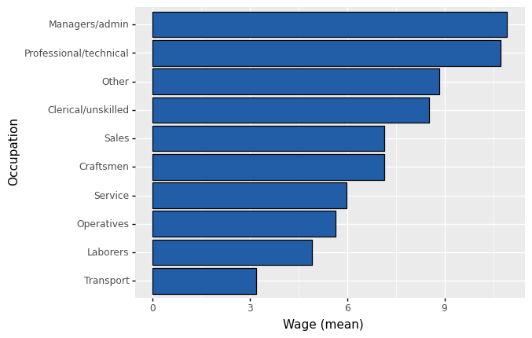
Pour inverser l’ordre on remplace dans la fonction reorder() wage par -wage
python:
(
ggplot()
+ geom_bar(df,aes(x='reorder(occupation,-wage)', y='wage') , stat='identity', color='black', fill='#225EA8')
+ ylab("Wage (mean)")
+ xlab("Occupation")
+ coord_flip()
)
end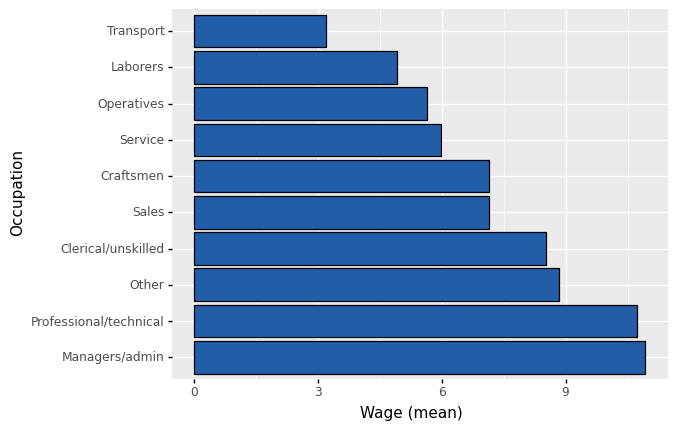
Lollipop
- Sur le même principe que Stata, on utilise
geom_segment()[stata:pci] etpoint_point()[stata:scatter] pour afficher ce type de graphique - Une version avec écarts par rapport au salaire moyen toutes branches professionnelles confondues est présentées. En amont on récupère cette moyenne avec Stata et on génère les différences (variable diffw) dans la base collapsée.
Préparation des données
use nlsw88,clear
qui sum wage
local mw = `r(mean)'
preserve
collapse wage, by(occupation)
drop if occupation==.
drop if wage==.
gen mw = `mw'
gen diffw = wage - mw
save wage1, replace
restore
python:
df=pa.read_stata('D:/stata_temp/wage1.dta')
df.head()
endGraphique
python:
(
ggplot()
+ geom_segment(df,aes(y='occupation', yend='occupation', x=0, xend='wage'), size=1.2, color='#225EA8')
+ geom_point(df, aes(y='occupation', x='wage'), size=3.5, color='#225EA8', fill='#1D91C0')
+ xlab("Wage (mean)")
)
end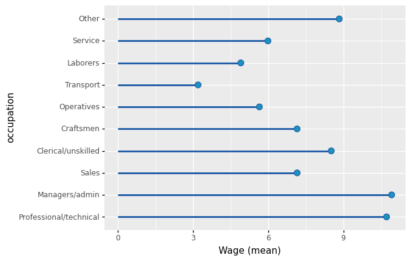
python:
(
ggplot()
+ geom_segment(df,aes(y='reorder(occupation,wage)', yend='reorder(occupation,wage)',
x=0, xend='wage'), size=1.2, color='#225EA8')
+ geom_point(df, aes(y='reorder(occupation,wage)', x='wage'), size=3.5, fill='#1D91C0' )
+ xlab("Wage (mean)")
+ ylab("Occupation")
)
end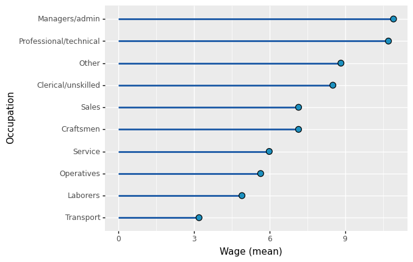
On peut jouer sur l’épaisseur des segments et la couleur des bulles
python:
(
ggplot()
+ geom_segment(df,aes(y='reorder(occupation,wage)', yend='reorder(occupation,wage)',
x=0, xend='wage'), size=5.8, color='#225EA8')
+ geom_point(df, aes(y='reorder(occupation,wage)', x='wage'), size=5, fill='yellow' )
+ xlab("Wage (mean)")
+ ylab("Occupation")
)
end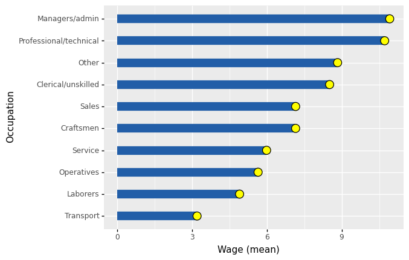
Pour visualiser les différences entre le salaire moyen des branches et la moyenne sur l’ensemble des observations on utilise la variable diffw au lieu de wage
python:
(
ggplot()
+ geom_segment(df,aes(y='reorder(occupation,diffw)', yend='reorder(occupation,diffw)', x=0, xend='diffw'), size=1.2, color='#225EA8')
+ geom_point(df, aes(y='reorder(occupation,diffw)', x='diffw'), size=3.5, fill='#1D91C0' )
+ xlab("Ecarts avec le salaire moyen")
+ ylab("Professions")
)
end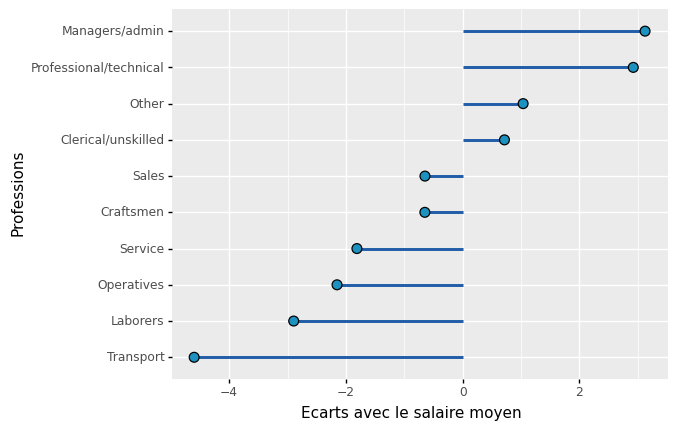
- Pour améliorer le graphique on peut ajouter une barre verticale sur x=0
- On a également changer le thème du graphique:
theme_light()
(
ggplot()
+ geom_segment(df,aes(y='reorder(occupation,diffw)', yend='reorder(occupation,diffw)', x=0, xend='diffw'), size=1.2, color='#225EA8')
+ geom_point(df, aes(y='reorder(occupation,diffw)', x='diffw'), size=3.5, fill='#1D91C0' )
+ geom_segment(df,aes(y=1, yend=10, x=0, xend=0), size=1.2, color='#225EA8')
+ xlab("Ecarts avec le salaire moyen")
+ ylab("Occupation")
+ theme_light()
)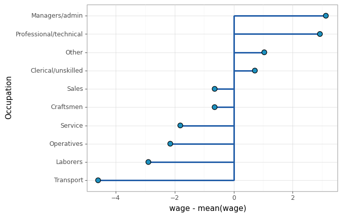
Comparaisons: haltères
- On génère en amont avec Stata les salaires moyens selon l’appartenance ou non à un syndicat (wage0 et wage1). On les utilise pour renseigner les coordonnées de
geom_segment()avec x=wage0 et xend=wage1, et on génère également deux nuages. Les professions seront triées par la valeur de wage1 (dans l’exemple avec stata on avait utilisé la moyenne de wage0 et wage1) . - Pour générer une légende manuellement (ce n’est pas le fort de la syntaxe de
ggplotà mon sens), on a besoin de de créer deux variables précisant les deux labels (nunion = non union et union = union). La légende est générée par l’optionscale_fill_manual()dans laquelle on renseigne les couleurs qui seront automatiquement affectées aux bulles et les labels.
Préparation des données
use nlsw88.dta, clear
preserve
collapse wage, by(occupation union)
drop if union==.
drop if occupation==.
reshape wide wage, i(occ) j(union)
gen union="Union"
gen nunion="Non Union"
save wage2, replace
restoreGraphique
(
ggplot()
+ geom_segment(df,aes(y='reorder(occupation,wage1)', yend='reorder(occupation,wage1)', x="wage0", xend='wage1'), size=5.8, color='#081D58')
+ geom_point(df, aes(y='reorder(occupation,wage1)', x='wage0', fill='nunion'), size=5, color='#081D58')
+ geom_point(df, aes(y='reorder(occupation,wage1)', x='wage1', fill='union'), size=5, color='#081D58')
+ xlab("Wage (mean)")
+ ylab("Occupation")
+ scale_fill_manual(name=' ', values=["green", "yellow"], limits=["Union", "Non Union"])
+ theme_light()
)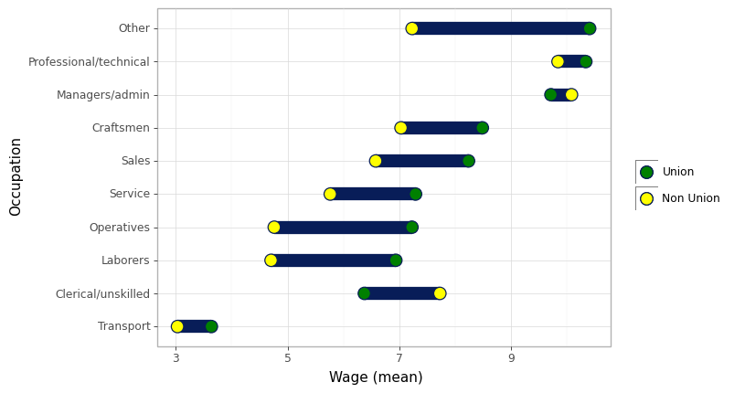
3.7 Variables catégorielles
- On va de nouveau utiliser les graphiques de type barre
- La commande
catplotde Stata (NJ.Cox) permet de récupérer directement les %, avecplotnine(idemggplot) on doit générer la statistique en amont avec la commandecollapse. - Pour la visualisation de type mosaique, la geometrie
*geom_mosaic()*n’est pas (encore) implémentée dans plotnine. Une solution est possible avec les facettes, mais une option pour ajuster leur largeur n’est pas encore activée. Le rendu n’est donc pas optimal. Pour générer le graphique avecgeom_rect, il y a un travail plus important pour générer les coordonnées; la commande Stata fait donc très bien l’affaire.
Préparation des données (Stata)
use nhanes2f, clear
drop if health==.
keep race health
gen h=health
preserve
collapse (count) h, by(race health)
bysort race: egen tot=total(h)
gen p = (h/tot)*100
save health, replace
restore- Par défaut, on obtient une version empilée du graphique. Pour afficher une barre distincte pour chaque niveau de santé, on utlise l’option
position = position_dodge()dans les arguments de *geom_bar() - J’ai ajouté quelques options pour le graphique au niveau des couleurs
stacked
(
ggplot(df, aes(x='race', y='p', fill='health'))
+ geom_bar(stat='identity', alpha=1, color='#E6EFEF', size=.2)
+ scale_fill_manual(name=" ", values=['#46327F', '#46637D','#21908C', '#64B479', '#9FDA3A'], limits=["poor", "fair", "average", "good", "excellent"])
+ coord_flip()
+ theme_light()
+ theme(
panel_background = element_rect(fill = '#E6EFEF'),
plot_background = element_rect(fill = '#E6EFEF'),
legend_background = element_rect(fill = '#E6EFEF')
)
+ ylab("%")
+ ggtitle("Subjective health")
)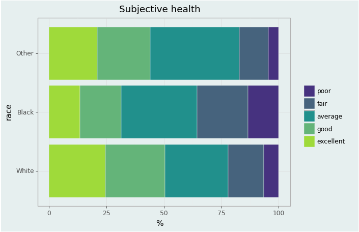
Unstacked
python:
(
ggplot(df, aes(x='race', y='p', fill='health'))
+ geom_bar(stat='identity', alpha=1, color='#E6EFEF', size=.2, position = position_dodge())
+ scale_fill_manual(name=" ", values=['#46327F', '#46637D','#21908C', '#64B479', '#9FDA3A'], limits=["poor", "fair", "average", "good", "excellent"])
+ coord_flip()
+ theme_light()
+ theme(
panel_background = element_rect(fill = '#E6EFEF'),
plot_background = element_rect(fill = '#E6EFEF'),
legend_background = element_rect(fill = '#E6EFEF')
)
+ ylab("%")
+ ggtitle("Subjective health")
)
end